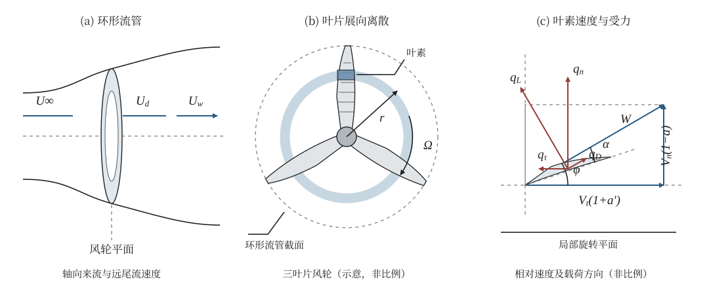

3.3 OpenFAST—ROSCO整机气动弹性模型
3.3.1 叶素动量理论与叶片气动力计算
风轮气动力是混合塔架风致振动的主要激励之一。本文采用OpenFAST中的AeroDyn模块，基于叶素动量理论（Blade Element Momentum Theory，BEM）计算叶片分布气动力。BEM将环形流管的动量守恒与叶素截面的二维翼型气动力相结合，通过诱导因子建立来流速度与叶片荷载之间的关系[128-130]。
（1）环形流管动量理论
将风轮扫掠面沿径向划分为若干环形流管，取距旋转轴半径为r、径向宽度为dr的微元。在理想稳态、不可压缩、轴对称轴向来流条件下，忽略环形流管之间的径向交换。设无穷远上游风速为U∞，定义轴向诱导因子a，则叶轮平面风速Ud及远尾流风速Uw分别为
由质量守恒，环形流管的质量流率为
式中，ρ为空气密度。设Ω为风轮角速度，a′为切向诱导因子，经典旋转尾流模型的远尾流切向诱导速度幅值为2a′Ωr。由轴向动量与角动量守恒，环形流管的推力和转矩为
上述动量方程以无限叶片圆盘的理想流动假设为基础；有限叶片数导致的根部、尖部损失及高诱导区的非理想尾流效应将在后文修正。

（2）叶素相对来流及气动力
叶片沿展向离散为若干气动计算截面，各截面的弦长、扭角及翼型系数由DTU 10 MW参考风轮的气动几何与翼型数据确定。取第b片叶片的局部法向及反旋转方向单位矢量分别为en和et，来流速度和气动截面运动速度分别为vw与vs。未计诱导的相对速度分量为
截面运动速度包含风轮旋转、机舱与塔顶运动以及叶片弹性变形引起的速度。在轴向均匀来流、刚性风轮且无整机平动的情形下，Vn=U∞、Vt=Ωr。考虑轴向、切向诱导作用后，局部相对速度分量及其合速度为
式中，φ为相对来流方向与局部旋转平面之间的夹角。为说明变桨及结构扭转对攻角的影响，在不随截面扭转的局部参考平面内，攻角可表示为
式中，θ为初始几何扭角，β为变桨角，θel为弹性扭转角；实际截面姿态由气动与结构模块的坐标变换确定，已计入姿态的弹性扭转不再重复扣除。与固定桨距假设不同，本文的变桨角随控制器输出而变化。
根据二维翼型理论，叶素单位展长升力qL、阻力qD为
式中，c为叶素弦长；CL、CD分别为升力系数和阻力系数，由局部攻角及翼型气动特性确定。将升阻力投影至风轮局部法向和旋转方向，分别定义法向气动力系数Cn和切向气动力系数Cτ：
叶素单位展长法向力qn、切向力qτ及翼型俯仰力矩ma为
其中，qn、qτ的单位为N/m；ma的单位为N·m/m；Cm为翼型俯仰力矩系数。对于具有B片相同叶片的稳态轴对称风轮，环形微元的气动力与转矩为
（3）诱导因子与有限叶片数修正
定义局部实度σr为叶片弦长总和与相应圆周长度之比：
有限叶片数使叶尖与叶根附近的环量及诱导速度分布不同于无限叶片圆盘。AeroDyn采用Prandtl叶尖、叶根损失修正[129]，对应损失因子为
式中，R为风轮半径，Rh为轮毂半径；Ftip和Fhub分别为叶尖与叶根损失因子。将动量方程（3.3-3）、（3.3-4）乘以F，并与叶素方程（3.3-13）联立，在正常发电、低诱导及分母非零的条件下可得
当轴向诱导因子增大时，风轮后方尾流混合增强，经典轴向动量关系不再适用于高诱导区。定义环形推力系数CT,r为环形推力与参考动压乘环形面积之比，在正常轴向来流下有
对于高诱导工况，采用含有限叶片数修正的Glauert–Buhl推力关系[128-130]：
联立上述推力关系与叶素侧推力系数求得高诱导区的轴向诱导因子。该修正使两段推力曲线在a=0.4处连续且一阶导数相等，避免直接外推低诱导公式。偏航及倾斜来流引起的非轴对称尾流影响由AeroDyn的Pitt/Peters偏斜尾流修正处理[121,129]。制动、反向流动及端部奇异状态按软件相应分支计算，不将上述正常发电公式直接用于所有状态。
（4）叶素动量方程的求解
由于诱导因子影响入流角，而入流角又决定攻角与气动力系数，叶素动量方程构成非线性耦合方程。AeroDyn采用Ning提出的入流角单变量求根方法[128,129]。在正常发电且速度分量非零的条件下，令λr=Vt/Vn，可将局部速度三角形的几何约束写为
对每一时刻的叶片气动截面，由局部来流、截面速度及姿态确定未诱导速度分量；在给定入流角下计算攻角、翼型气动力系数与根尖损失因子，并根据诱导区间更新a及a′。在适当的入流角区间内对残差方程求根，收敛后计算相对速度及分布气动力。相较于直接对两个诱导因子进行固定点迭代，该方法通过单变量残差及分区间搜索改善收敛鲁棒性。
（5）风轮气动载荷积分
空间非均匀湍流条件下，各叶片瞬时气动载荷不同。对平直叶片及统一风轮轴向的简化情形，第b片叶片的法向、切向单位展长载荷分别为qn,b、qτ,b，则风轮推力和转矩为
风轮气动功率定义为
对于预弯、倾斜和发生弹性变形的叶片，必须考虑气动截面坐标与全局坐标之间的转换。设Φb为截面局部至统一坐标系的旋转矩阵，fb和mb为截面单位展长气动力及力矩，xb为气动作用点坐标，xO为轮毂参考点，则气动力与力矩合量为
式中，s为叶片展向积分坐标。将风轮气动力矩换算到塔顶参考点时，相应的力臂项必须保留；塔顶结构接口的总力和总力矩还包含风轮、传动链及机舱的重力与惯性效应，不能与上述风轮气动合量直接等同。
3.3.2 气动模型设置与整机计算工况
本文DTU 10 MW整机筛选模型采用三片叶片。根据归档AeroDyn输入文件，空气密度取1.225 kg/m³，气动特性由六组翼型数据文件及攻角相关系数确定；采用准稳态BEM和稳态翼型气动模型，启用Prandtl叶尖与叶根损失、切向诱导、轴向及切向诱导中的阻力项、翼型俯仰力矩以及Pitt/Peters偏斜尾流修正。主要设置见下表。
| 参数 | 设置 | 物理含义 |
|---|---|---|
| WakeMod / AFAeroMod | 1 / 1 | 准稳态BEM／稳态翼型气动 |
| SkewMod | 2 | Pitt/Peters偏斜尾流 |
| TipLoss / HubLoss | True / True | 叶尖／叶根损失 |
| TanInd / AIDrag / TIDrag | True / True / True | 切向诱导及诱导求解阻力项 |
| UseBlCm / AFTabMod | True / 1 | 翼型俯仰力矩／攻角表 |
| AirDens | 1.225 kg/m³ | 计算空气密度 |
| IndToler / MaxIter | Default / 500 | 残差容限／迭代上限 |
| TwrPotent / TwrShadow / TwrAero | 0 / 0 / False | 不计塔架局部流动及塔身气动力 |
上述气动模型用于已有36组随机风工况的整体响应筛选。气动模块未启用动态入流和非定常翼型气动，亦未计算塔身外部气动力。因此，整机输出的推力、转矩、转速及塔底弯矩用于比较所设模型的运行响应；完整混塔外风载仍需独立确定塔身气动力及统一接口载荷。
新增参考文献
[128] NING S A. A simple solution method for the blade element momentum equations with guaranteed convergence[J]. Wind Energy, 2014, 17(9): 1327-1345. DOI: 10.1002/we.1636.
[129] NING S A, HAYMAN G, DAMIANI R, JONKMAN J. Development and validation of a new blade element momentum skewed-wake model within AeroDyn[R]. NREL/CP-5000-63217, 2014.
[130] BUHL M L Jr. A new empirical relationship between thrust coefficient and induction factor for the turbulent windmill state[R]. NREL/TP-500-36834, 2005.